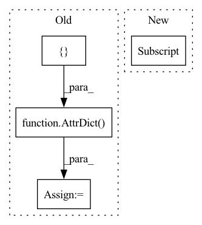

Pattern ID :16772
Before Change
Returns:
results = AttrDict({
"epoch_losses": [],
"epoch_regularizations": [],
} )
// metrics = AttrDict({})
// for metric in self.metrics:
// metrics[metric.name] = []
After Change
if self.verbose:
print("Train Time: {:8.4f}".format(time.time() - start))
print("Total Batches: ", self.metrics[0] .total_updates)
def _train_epoch(self, e, loader):
Make one complete iteration over all samples in dataloader and update model after each batch.In pattern: SUPERPATTERN
Frequency: 3
Non-data size: 4
Instances Fragment ID: 56077891
Project Name: ourownstory/neural_prophet
Commit Name: ea05689f7ccca059223f80c7bd85f8b7943e69d0
Time: 2020-06-16
Author: oskar.triebe@merantix.com
File Name: neuralprophet/neural_prophet.py
M Class Name: NeuralProphet
N Class Name: NeuralProphet
M Method Name: _train(2)
N Method Name: _train(2)
M Parent Class:
N Parent Class:
M File Name: neuralprophet/neural_prophet.py
N File Name: neuralprophet/neural_prophet.py
M Start Line: 277
M End Line: 302
N Start Line: 274
N End Line: 284
Before Change
)
seasonalities[props["mode"]][name] = features
// remove potentially empty mode-OrderedDicts
seasonalities_out = AttrDict({} )
for mode in seasonalities:
if len(seasonalities[mode]) > 0:
seasonalities_out[mode] = seasonalities[mode]
return seasonalities_outAfter Change
seasonalities = OrderedDict({})
// Seasonality features
for name, period in season_config.periods.items():
if period["resolution"] > 0:
features = fourier_series(
dates=dates,
period=period["period"], Fragment ID: 56077889
Project Name: ourownstory/neural_prophet
Commit Name: 6c2ec029f5701959a2786d0e77ddee5318e6fcfc
Time: 2020-06-02
Author: oskar.triebe@merantix.com
File Name: code/utils.py
M Class Name: AnonimousClass
N Class Name: AnonimousClass
M Method Name: seasonal_features_from_dates(2)
N Method Name: seasonal_features_from_dates(2)
M Parent Class:
N Parent Class:
M File Name: code/utils.py
N File Name: code/utils.py
M Start Line: 251
M End Line: 268
N Start Line: 119
N End Line: 129
Before Change
self._init_model()
dataset = self._create_dataset(df, predict_mode=False)
loader = DataLoader(dataset , batch_size=self.train_config["batch"], shuffle=True)
results = AttrDict({} )
total_batches = 0
epoch_losses = []
epoch_regs = []
start = time.time()After Change
results["time_train"] = time.time() - start
results["loss_train"] = epoch_losses[-1]
if self.verbose:
print("Train Time: {:8.4f}".format(results["time_train"] ))
print("Total Number of Batches: ", total_batches)
return results
Fragment ID: 56077887
Project Name: ourownstory/neural_prophet
Commit Name: 6c2ec029f5701959a2786d0e77ddee5318e6fcfc
Time: 2020-06-02
Author: oskar.triebe@merantix.com
File Name: code/bifrost.py
M Class Name: Bifrost
N Class Name: Bifrost
M Method Name: _train(2)
N Method Name: _train(2)
M Parent Class:
N Parent Class:
M File Name: code/bifrost.py
N File Name: code/bifrost.py
M Start Line: 201
M End Line: 231
N Start Line: 212
N End Line: 226